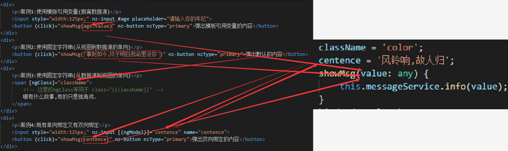

概述
本章讲解的内容是在Angular当中非常常用的API,常见不代表简单,有些API相对来说比较难于理解,如果反复阅读后还是无法理解,可以暂时搁置,继续看其他章节的内容,逐渐地理解.
我个人认为,很多时候,软件开发的理论无异于玄学,初期根本听不懂.但是在开发久了之后,会发现那些理论说的是对的.
所以我个人对于软件开发有个小小的看法,就是先学会用,再学会理解.
默认代码分析
观察之前新建的项目,在
app.component.ts中可以看到如下代码
-
selector指明其选择器名
-
templateUrl指明其使用哪个模板文件
-
styleUrls指明使用哪些CSS样式表
我们知道,传统页面都是html+css+js组成的,那么我们回忆下,是谁将这三者结合在一起的?没错,是html.使用
link和
script标签引入样式表和脚本文件.所以,在传统页面中,
html是核心.而在Angular中,
typescript是核心,他将决定使用哪些样式表和哪个模板文件.
注意看,只有
styleUrls是数组的形式,这意味着,他是允许使用多个样式的.
selector是一个选择器,其实就是给现在这个页面做个标记,方便在其他页面引用.
一开始可能大家很难理解
selector的作用,我给大家打个比方,大家看过火影忍者吗?四代火影的
飞雷神 需要先扔一个苦无作为标记,然后才能将自身传送至苦无所在的地方.这个
selector就是苦无的作用,他先指明自身的代号,在需要引入的地方插入这个标签即可引用页面内容.或者说,类似于html的
iframe标签.
,虽然模板文件只有一个,但并不一定要通过这个关键字声明.也可以使用
template来声明.二者的区别相信大家一眼就看出来,前者是指定了某一个html文件作为模板,后者是直接将html代码写在ts当中.两种方式随你喜欢,不影响使用.
app.module.ts
在
创建项目部分,已经大致地介绍过文件结构,这里需要将
app.module.ts单独拿出来好好介绍一下.这个文件关系到之后几乎所有的案例.
在这个文件当中,主要由以下几部分组成
- 使用
import引入模块
-
在
@NgModule中配置引入的模块
这里最难理解的显然是
@NgModule部分,该部分主要有以下几个字段
-
declarations —— 导入该应用的组件、管道、指令
-
imports —— 导入其他模块供本模块使用
-
providers —— 声明服务
-
bootstrap —— 应用启动的根组件
也许你看了这个简单的描述之后,完全没有理解其含义.这是正常的,这个部分我个人认为是蛮抽象的,其实暂时不用太搭理它,之后我们详细来谈谈这部分.之所以提前把这个知识点先列出来,是因为之后的案例需要用到这个部分.所以,请记好了:
你声明的子组件、管道、指令,其类名都需要在这里引入并且在 declarations当中声明.
大概像这个样子
插值表达式
思考一个问题,在传统开发中,JS定义了一个用户名,如何放在html当中合适的位置呢?查看如下所示代码,是否与你想的一样?
在Angular当中,不需要这么复杂,只需如下代码即可成功显示变量
这里需要大家记住一句话:
JQ是
事件驱动,Angular是
数据驱动.
如果暂时无法理解也没有关系,请务必记住这句话!
运行结果
{{userName}}
是不是感觉很方便?这个叫
插值表达式,即用双花括号即可引用TS中的变量,对象,数组内容等,如下所示
其实在Angular当中,任何能够引用typescript成员变量的地方,都能够引用
字符串、
对象、
数组的值.
运行结果
{{byString}}
{{byObject.centence}}
{{byArray[0]}}
插值表达式不仅能够用在纯文本的地方,还能用在属性上.
注意,插值表达式可以用在
属性值上,但不能用在
属性名上,即只能用在等号的右侧,不能用在等号的左侧.
运行结果
绑定机制
Angular最大的亮点就是他的绑定机制,一共有三种
- 属性 - 从数据源到视图(单向)
- 事件 - 从视图到数据源(单向)
- 表单值 - 从视图到数据源再到视图(双向)
视图,就是我们看到的样子,其实就是指HTML.
数据源,是指typescript中的值,无论他是定义好的值还是来自服务器的值,都是数据源.
示例
观察以下代码和运行结果,尝试理解Angular的绑定机制.
在看这些案例之前,需要先科普一个知识点叫做绑定点击事件
(click)="function()",在传统开发中,如果想要绑定点击事件,需要使用JS先查找DOM元素再添加监听事件,而在Angular中,不需要做这些事情,只需要在需要绑定的元素上使用
(click)即可,
function()是触发点击事件时调用的函数.
再次强调:
JQ是
事件驱动,Angular是
数据驱动.
案例1
点击按钮,就会弹出带有
#age标记的值,
#age标记了
input的DOM元素,这个用法在传统开发中是没有的,其实他的作用,和
飞雷神 差不多...原谅我又想到了这个比喻,因为他们真的很像,就是起到标记的目的.这个在官方翻译中是
模板引用变量,其实看字面意思也知道,引用嘛,那不就是标记的意思嘛.因此,他传递的值是
age.value,就把输入框的值传给了ts.
messageService与Angular无关,是
antd-design的一个全局通知服务,你不用了解,你可以使用
console进行实验.
案例2
这里没有使用输入框,而是在函数中直接传入了一个字符串,注意,当传固定的值时,需要使用单引号将起包围.可以看到,在触发函数的时候,他是将字符串传递给了数据源,属于从视图向数据源传值,所以是单向绑定.
案例3
在渲染模版时,
className来自数据源的变量,属于从数据源到视图的传值,所以是单向绑定.
案例4
ngModel会将数据源中的centence的值与input的值进行绑定,并且是双向绑定.即无论哪方修改了值,另外一方马上也会修改值.当点击按钮时,调用
showMsg(centence)方法,而
centence的值是来自数据源的值,和上面input的
ngModel没有直接关系.所以这里在这个案例中,既有双向绑定又有单向绑定.
如果使用
ngModel则必须声明
name属性.但是二者的属性值未必要保持一致,我在案例中一般是一致的,图个方便而已.
数据流图
附上一副hin凌乱的数据流向图...大概能看的懂吧...

总结
思考这样一个问题,案例1和案例4都是输入一个值,然后显示,二者有何区别?
效果虽然一样,但是思路是不一样的,案例1用的是模版引用变量,案例4用的是单双向绑定结合.
判断单双向绑定:
出现
[ ],说明是从数据源到视图的单向绑定.
出现
( ),说明是从视图到数据源的单向绑定.
出现
([ ]),说明是双向绑定,再次强调,一旦使用
ngModel必须指明
name属性.
运行结果
案例2:使用固定字符串(从视图到数据源的单向)
案例3:使用固定字符串(从数据源到视图的单向)
哪有什么故事,有的只是独角戏.
安全导航操作符
很多时候,我们的数据是从后台读取的.而后端的数据有可能会缺失某个字段,比如说有一个User实体,我们如果使用插值表达式等方式读取数据源的user.name不会有问题,因为每个人都有名字,但是如果访问user.lover,显然并不是每个人都有心爱之人(随便打的比方,不用太在意这个字段含义),就会出现有时候Angular报错,因为Angular检测到有时根本没有lover字段.
为了方便起见,Angular提供了安全导航操作符,只需要在需要引用的变量前加一个
?即可避免这个问题.
示例
我作为一个单身狗(为了写教程,下血本了),我是没有的lover的(┬＿┬).所以,当在模板中引用我的lover字段时是会报错的,然而你能看到信息都能正常显示,只是没有lover信息(这是合理的,因为没有定义这个字段).
运行结果
My name is {{user.name}} and I was born in {{user.bornYear}},my lover is
ng-content
这部分知识要求你对父子组件有略微了解,如果你完全没接触过父子组件,建议你先看一下
组件交互.
通常,我们使用父子组件时都是直接使用标签名,内部不包含内容.
那如果包含了内容呢?实际上,默认情况下是会被省略的.如果希望内容在子组件中出现呢?为了应对这个场景,Angular提供了
ng-content.
现在我们来实现这样的一个需求,在子组件的标签中,放置三句话,这三句话能够在子组件的特定位置显示.在子组件中需要显示的地方,放置
ng-content标签,相当于占位符的作用.在渲染页面时,会自动将父组件中的内容映射到
ng-content当中.
现在我们来思考另外一个场景,我不只要把内容放进去,而且要按自己想要的内容放成几块,或者过滤一部分内容,该怎么做呢?
ng-content拥有
select属性,可以起到过滤作用.类似于css选择器,他可以过滤父组件传来的内容,根据class类名或者标签名进行过滤.
运行结果
父组件
{{sentence}}
所谓的不公,只是不符合人类社会法则
却符合因果关系
ng-template
当
ng-template上没有结构型指令时,是不会产生作用的.也就是说,如果只有一个单独的
ng-template,无论内部包含了什么,都会显示为注释
运行结果
我想大声地告诉你:
能够认识你,我已经很开心了.
当
ng-template拥有结构型指令时,就会开始工作.
ngIf是
结构型指令,简单地说,如果其值为true,则显示内容,否则抹去DOM结点.
运行结果
我想大声地告诉你:
能够认识你,我已经很开心了.
ng-container
ng-container只是一个分组元素,它的特点就是在渲染页面时,自身不加入DOM.你可以使用浏览器的开发者工具,查看运行结果中的这句话,是否只有p标签包围.
如果你真的查看HTML源码,你会看到p标签的上一层是一个样式为ant-card-body的div标签,这是我的运行结果容器,也就是这个灰色背景,并不是ng-container带来的.
运行结果
小时候刮奖刮出“谢”字还不扔，非要把“谢谢惠顾”都刮的干干净净才舍得放手，和后来太多的事一模一样。